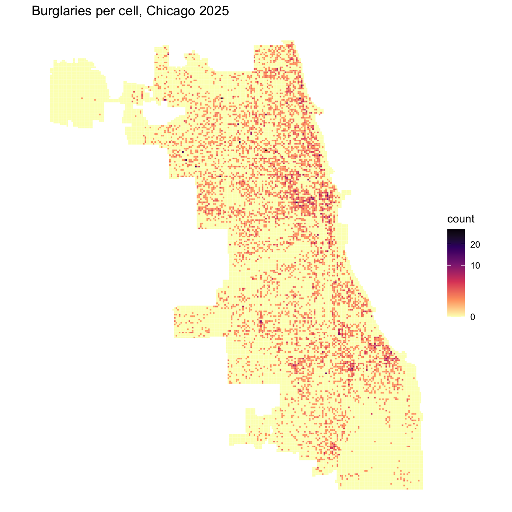
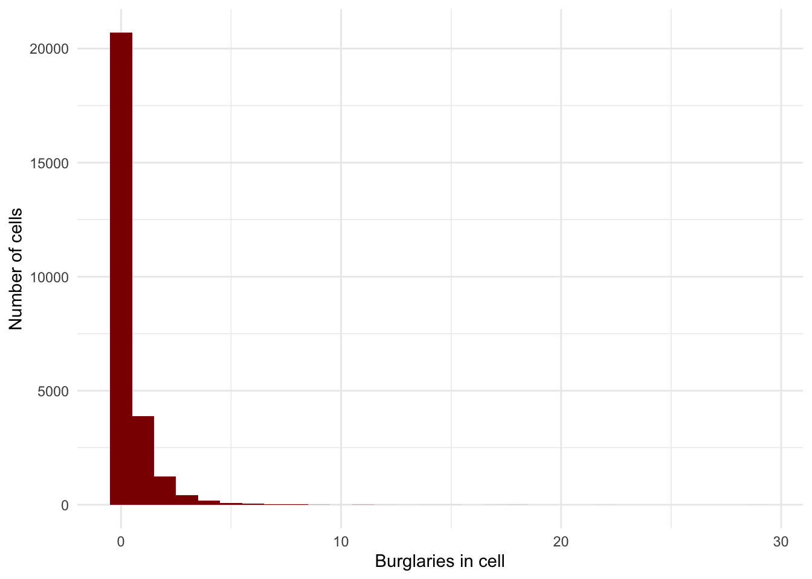
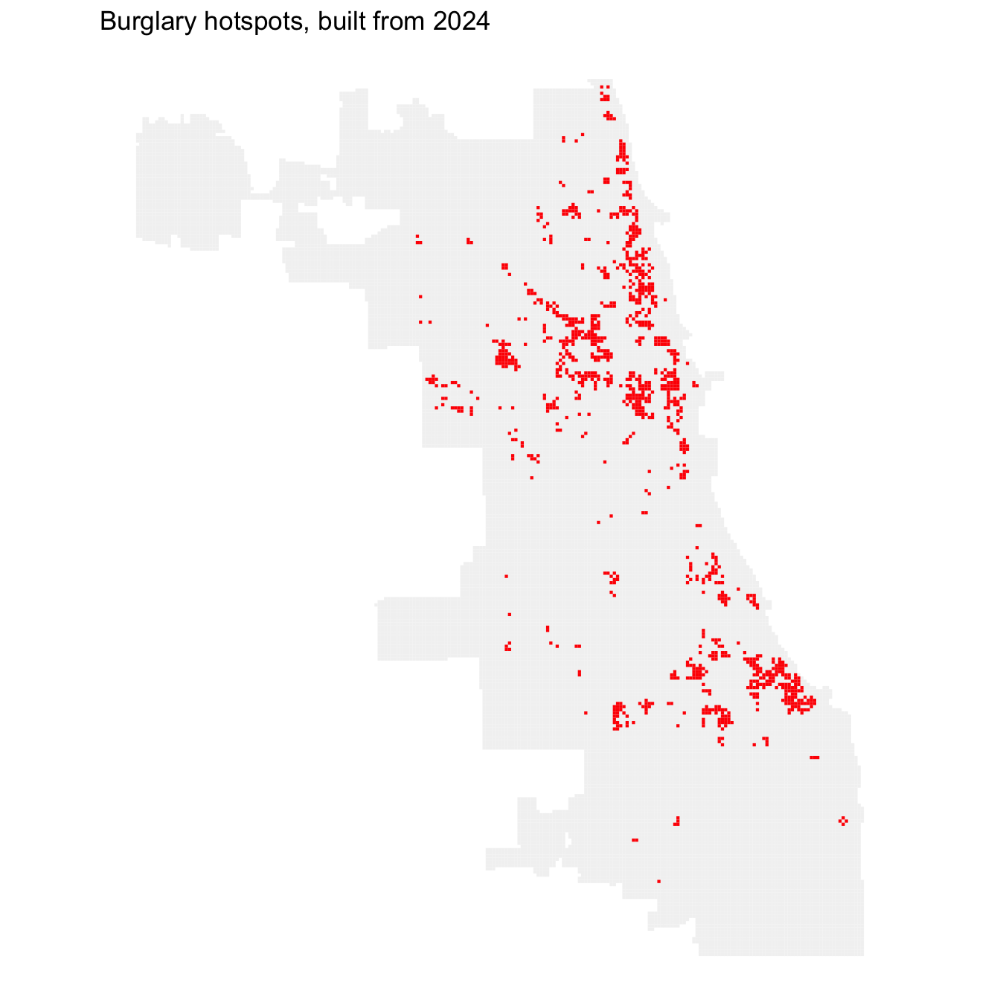
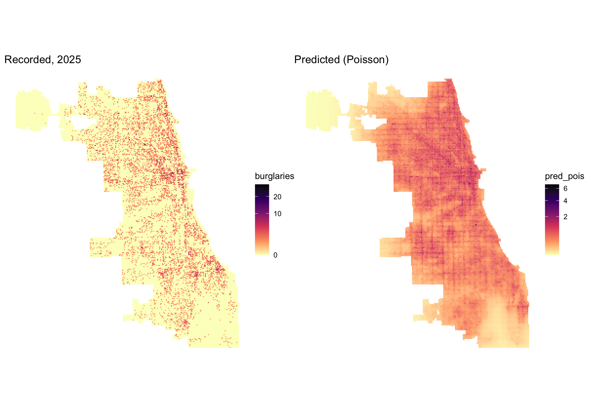
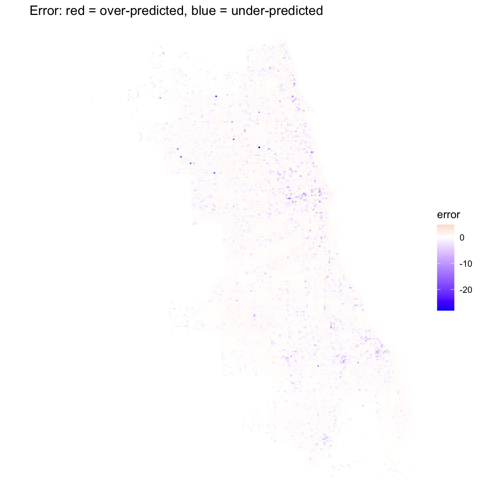

library(tidyverse)
library(sf)
library(spdep)
library(FNN)
library(tigris)
library(patchwork)
options(tigris_use_cache = TRUE, timeout = 300)
# Chicago standard: Illinois East State Plane, US feet
crs_chi <- 3435Lab 9: Predicting Burglary in Chicago
MUSA 5080 Week 9
What you’re doing today
In class demonstrated some code to construct a burglary model for Philadelphia. Now you rebuild it for Chicago, your new favorite city!
The rules are the same as in the slides:
- 2024 data builds the features
- 2025 burglaries are the outcome
Wherever you see ___, fill it in. Type the code yourself; don’t copy it from the slides.
TipGetting Chicago data
This is the same Socrata portal as the last assignment, so the cheat sheet still applies:
- Put filter values in single quotes. They’re case-sensitive (
'BURGLARY', not'Burglary'). - Always set
$limit. Otherwise Socrata quietly stops at 1,000 rows. - Use
str_squish()on the where-clause, then download to a tempfile beforest_read(). That way you see the real error message if something goes wrong.
Data retrieved on October 30, 2026. Counts may change as the city updates its records.
Part 0: Setup
Part 1: Get the data
1A. The city boundary
chicago <- places("IL", cb = TRUE, year = 2024, progress_bar = FALSE) %>%
filter(NAME == "Chicago") %>%
st_transform(crs_chi)1B. Burglaries, 2024 and 2025
Here’s 2024, written out in full:
where_2024 <- str_squish("primary_type = 'BURGLARY'
AND year = 2024
AND latitude IS NOT NULL")
url_2024 <- paste0("https://data.cityofchicago.org/resource/ijzp-q8t2.geojson?",
"$where=", URLencode(where_2024, reserved = TRUE),
"&$limit=100000")
tmp <- tempfile(fileext = ".geojson")
download.file(url_2024, tmp, quiet = TRUE)
burg_2024 <- st_read(tmp, quiet = TRUE) %>% st_transform(crs_chi)
nrow(burg_2024)[1] 8396Now write 2025 yourself:
where_2025 <- str_squish("primary_type = 'BURGLARY'
AND year = 2025
AND latitude IS NOT NULL")
url_2025 <- paste0("https://data.cityofchicago.org/resource/ijzp-q8t2.geojson?",
"$where=", URLencode(where_2025, reserved = TRUE),
"&$limit=100000")
tmp <- tempfile(fileext = ".geojson")
download.file(url_2025, tmp, quiet = TRUE)
burg_2025 <- st_read(tmp, quiet = TRUE) %>% st_transform(crs_chi)
nrow(burg_2025)[1] 9667Question 1.1: Is either count exactly 1,000? What would that tell you?
Neither count is exactly 1,000: there are 8,396 records for 2024 and 9,667 for 2025. A count of exactly 1,000 would suggest that the query hit Socrata’s default limit, so I would check $limit before treating it as the full dataset.
1C. 311 requests, 2024
The 311 dataset is v6vf-nfxy. First, find out what the request types are actually called. Don’t guess the spelling.
params <- c(
`$select` = "sr_type, count(*) AS n",
`$where` = "created_date between '2024-01-01T00:00:00' and '2024-12-31T23:59:59'",
`$group` = "sr_type",
`$order` = "n DESC",
`$limit` = "100"
)
types_url <- paste0("https://data.cityofchicago.org/resource/v6vf-nfxy.csv?",
paste0(names(params), "=",
sapply(params, URLencode, reserved = TRUE),
collapse = "&"))
sr_types <- read_csv(types_url)
sr_types# A tibble: 100 × 2
sr_type n
<chr> <dbl>
1 311 INFORMATION ONLY CALL 685581
2 Aircraft Noise Complaint 343797
3 Graffiti Removal Request 99366
4 Pothole in Street Complaint 51243
5 Abandoned Vehicle Complaint 49988
6 Garbage Cart Maintenance 49121
7 Rodent Baiting/Rat Complaint 45732
8 Tree Trim Request (NO LONGER BEING ACCEPTED) 42834
9 Street Light Out Complaint 39171
10 Tree Debris Clean-Up Request 33951
# ℹ 90 more rowsFind the exact names for abandoned vehicles, street lights out, and graffiti removal in that list. Then pull each one for 2024:
get_311 <- function(type) {
where <- str_squish(paste0("sr_type = '", type, "'
AND created_date between '2024-01-01T00:00:00' and '2024-12-31T23:59:59'
AND latitude IS NOT NULL"))
url <- paste0("https://data.cityofchicago.org/resource/v6vf-nfxy.geojson?",
"$where=", URLencode(where, reserved = TRUE),
"&$limit=200000")
tmp <- tempfile(fileext = ".geojson")
download.file(url, tmp, quiet = TRUE)
st_read(tmp, quiet = TRUE) %>% st_transform(crs_chi)
}
abandoned_cars <- get_311("Abandoned Vehicle Complaint")
light_outages <- get_311("Street Light Out Complaint")
graffiti <- get_311("Graffiti Removal Request")
c(cars = nrow(abandoned_cars), lights = nrow(light_outages), graffiti = nrow(graffiti)) cars lights graffiti
49957 39147 99104 Part 2: The fishnet
Pick your cell size now, before you see any results. The slides used 500 ft for Philadelphia.
cell_size <- 500 # in feet, because EPSG 3435 is in feet
fishnet <- st_make_grid(chicago, cellsize = cell_size, square = TRUE) %>%
st_sf() %>%
st_filter(chicago) %>%
mutate(cell_id = row_number())
fishnet <- fishnet %>%
mutate(burglaries = lengths(st_intersects(., burg_2025))) # 2025: the outcome
nrow(fishnet)[1] 26611The retained grid contains 9,664 of the 9,667 downloaded 2025 records. The remaining 3 points fall outside the retained cells; the model and KDE comparison use the same grid-count denominator.
ggplot(fishnet) +
geom_sf(aes(fill = burglaries), color = NA) +
scale_fill_viridis_c(option = "magma", direction = -1, trans = "sqrt") +
labs(title = "Burglaries per cell, Chicago 2025", fill = "count") +
theme_void()
Question 2.1: Why a grid instead of Chicago’s 77 community areas? Give two reasons.
A grid keeps the cells the same size, so differences in counts are not simply due to larger community areas. It also shows local concentrations that would be hidden by aggregating incidents into only 77 large areas; the results can still change with the grid size and placement.
Question 2.2: Why did you pick that cell size? Name one thing that would change if you doubled it.
I chose 500 feet before fitting the models to follow the Philadelphia example and retain a local view of burglary patterns. Doubling the side length to 1,000 feet would make each full cell four times as large, combine more incidents in each cell, and generally reduce the share of zero-count cells.
Part 3: Look at the outcome first
ggplot(fishnet, aes(burglaries)) +
geom_histogram(binwidth = 1, fill = "darkred") +
labs(x = "Burglaries in cell", y = "Number of cells") +
theme_minimal()
mean(fishnet$burglaries == 0) # share of zeros[1] 0.7781744c(mean = mean(fishnet$burglaries), variance = var(fishnet$burglaries)) mean variance
0.3631581 0.8837445 Question 3.1: What share of cells have zero burglaries? Give two reasons, from the slides, that OLS will struggle here.
77.8% of cells have zero burglaries. OLS can produce negative predictions even though a burglary count cannot be negative, and this highly right-skewed count outcome has unequal variability rather than the roughly constant error variance assumed by ordinary OLS inference.
Question 3.2: Compare the mean and the variance. What does a Poisson model assume about them, and does Chicago meet that assumption?
The mean is 0.363 burglaries per cell and the variance is 0.884, about 2.4 times the mean. Poisson assumes that the conditional mean and variance are equal. Chicago’s raw counts are overdispersed, which raises concern about that assumption; the raw comparison alone does not establish whether it holds after accounting for the predictors.
Part 4: Features from 2024
Build one of each feature type. These are the same four types as in A4.
centroids <- st_centroid(fishnet)
knn_dist <- function(from, to, k) {
nn <- get.knnx(st_coordinates(to), st_coordinates(from), k = k)
rowMeans(nn$nn.dist)
}
# The Loop: State & Madison
loop <- st_sfc(st_point(c(-87.6278, 41.8820)), crs = 4326) %>% st_transform(crs_chi)
fishnet <- fishnet %>%
mutate(
cars_cnt = lengths(st_intersects(., abandoned_cars)), # count in cell
light_nn1 = knn_dist(centroids, light_outages, k = 1), # nearest distance
graffiti_nn3 = knn_dist(centroids, graffiti, k = 3), # kNN distance
loop_mi = as.numeric(st_distance(centroids, loop)) / 5280,
log_light_nn1 = log(light_nn1),
log_graffiti_nn3 = log(graffiti_nn3)
)Question 4.1: Why do we log the distances but not cars_cnt?
Distances are right-skewed: a few cells are much farther from a request than most others. Logging compresses those large values and allows the association to change more quickly at short distances. Both distance variables are positive in this dataset, so their logs are defined. I keep cars_cnt as a count so that its coefficient describes one additional complaint, including cells with no complaints. Counts could also be transformed, but that would change the interpretation.
Part 5: The hotspot feature
Run LISA on 2024 burglaries and keep only the significant High-High cells.
fishnet <- fishnet %>%
mutate(burg_2024 = lengths(st_intersects(., burg_2024)))
nb <- knn2nb(knearneigh(st_coordinates(centroids), k = 8))
lw <- nb2listw(nb, style = "W")
set.seed(5080)
lisa <- localmoran_perm(fishnet$burg_2024, lw, nsim = 499)
fishnet <- fishnet %>%
mutate(quadrant = attr(lisa, "quadr")$mean,
p_value = lisa[, "Pr(folded) Sim"],
hotspot = quadrant == "High-High" & p_value < 0.05)
table(fishnet$hotspot)
FALSE TRUE
25485 1126 ggplot() +
geom_sf(data = fishnet, fill = "grey95", color = NA) +
geom_sf(data = filter(fishnet, hotspot), fill = "red", color = NA) +
labs(title = "Burglary hotspots, built from 2024") +
theme_void()
hot_pts <- centroids[fishnet$hotspot, ]
fishnet <- fishnet %>%
mutate(hotspot_dist_mi = knn_dist(centroids, hot_pts, k = 1) / 5280)Part 6: OLS vs. Poisson
f <- burglaries ~ cars_cnt + log_light_nn1 + log_graffiti_nn3 +
loop_mi + hotspot_dist_mi
ols <- lm(f, data = fishnet)
pois <- glm(f, family = "poisson", data = fishnet)
fishnet <- fishnet %>%
mutate(pred_ols = predict(ols),
pred_pois = predict(pois, type = "response"))
c(negative_ols = sum(fishnet$pred_ols < 0),
negative_pois = sum(fishnet$pred_pois < 0)) negative_ols negative_pois
2231 0 tibble(term = names(coef(pois)),
beta = coef(pois),
exp_beta = exp(coef(pois))) %>%
mutate(across(where(is.numeric), ~ round(.x, 3)))# A tibble: 6 × 3
term beta exp_beta
<chr> <dbl> <dbl>
1 (Intercept) 2.38 10.8
2 cars_cnt 0.006 1.01
3 log_light_nn1 -0.208 0.812
4 log_graffiti_nn3 -0.291 0.748
5 loop_mi -0.007 0.993
6 hotspot_dist_mi -0.709 0.492Part 7: Predicted vs. recorded
p1 <- ggplot(fishnet) + geom_sf(aes(fill = burglaries), color = NA) +
scale_fill_viridis_c(option = "magma", direction = -1, trans = "sqrt") +
labs(title = "Recorded, 2025") + theme_void()
p2 <- ggplot(fishnet) + geom_sf(aes(fill = pred_pois), color = NA) +
scale_fill_viridis_c(option = "magma", direction = -1, trans = "sqrt") +
labs(title = "Predicted (Poisson)") + theme_void()
p1 + p2
The panels use separate color scales. The RMSE values below are calculated on the same cells used to fit the models.
fishnet <- fishnet %>% mutate(error = pred_pois - burglaries) # positive = over-predicted
ggplot(fishnet) +
geom_sf(aes(fill = error), color = NA) +
scale_fill_gradient2(low = "blue", mid = "white", high = "red", midpoint = 0) +
labs(title = "Error: red = over-predicted, blue = under-predicted") +
theme_void()
c(rmse_ols = sqrt(mean((fishnet$pred_ols - fishnet$burglaries)^2)),
rmse_pois = sqrt(mean((fishnet$pred_pois - fishnet$burglaries)^2))) rmse_ols rmse_pois
0.9109679 0.8953413 Question 7.1: Where in Chicago does the model over-predict? Under-predict? Describe the pattern in one or two sentences.
Overprediction is scattered across central and southern Chicago, with the largest positive error south of the Loop. The strongest underpredictions are isolated high-count cells north and northwest of the Loop, with additional pockets downtown and on the South Side; the model smooths over these local peaks.
Part 7B: Does it beat last year’s map?
Before any model, departments smoothed last year’s burglaries into a heat map and patrolled the hot parts. Your model has to beat that.
library(spatstat.geom)
library(spatstat.explore)
bb <- st_bbox(fishnet) # use the fishnet's extent, so every cell centroid falls inside the window
win <- owin(xrange = c(bb["xmin"], bb["xmax"]), yrange = c(bb["ymin"], bb["ymax"]))
xy_2024 <- st_coordinates(st_filter(burg_2024, chicago)) # which year? drop points outside the city
kde_2024 <- density(ppp(xy_2024[, 1], xy_2024[, 2], window = win), sigma = 1000) # 1000 ft
xy_cent <- st_coordinates(centroids)
fishnet$kde_2024 <- safelookup(kde_2024, ppp(xy_cent[, 1], xy_cent[, 2], window = win))You’ll probably see a warning about duplicated points. That’s expected: Chicago geocodes crimes to the block, not the address, so many incidents share coordinates.
Now take the top 10% of cells by each method and count how many of 2025’s burglaries fall inside:
capture_rates <- fishnet %>%
st_drop_geometry() %>%
mutate(model_top = pred_pois >= quantile(pred_pois, 0.90),
kde_top = kde_2024 >= quantile(kde_2024, 0.90)) %>%
summarize(model = sum(burglaries[model_top]) / sum(burglaries),
kde = sum(burglaries[kde_top]) / sum(burglaries))
capture_rates model kde
1 0.2668667 0.3046358Question 7B.1: Which method captured more of 2025’s burglaries in its top 10% of cells? By how much?
KDE captures 30.46% of 2025 burglaries, compared with 26.69% for Poisson. KDE is ahead by 3.78 percentage points, even though the Poisson model was fitted to the 2025 outcome.
Question 7B.2: This comparison is rigged in the model’s favor. Explain why. (Hint: which of the two has already seen the 2025 data?)
The Poisson coefficients were fitted using the same 2025 burglary counts used to score the model. KDE uses only the locations of 2024 burglaries and has not seen the 2025 outcome. This is an in-sample comparison for the model, so its apparent advantage does not establish better prediction of an unseen year.
Question 7B.3: If the model only beats last year’s map by a little, what are you getting in exchange for its extra complexity and its extra sources of bias?
Here KDE actually captures more burglaries, so this comparison does not show a coverage benefit from the more complex model. Even a small gain would buy only a little additional coverage, plus information about associations with environmental features. In return, the department would have to collect and maintain more data and accept additional bias from who reports 311 problems and where incidents are recorded. A small in-sample improvement would not be enough to justify that tradeoff without a convincing improvement on unseen data; the coefficients also do not show that changing a feature will reduce burglary.
Optional challenge (no points)
- Fit a negative binomial model with
MASS::glm.nb(), using the same formula. Compare its coefficients and RMSE to the Poisson model’s. Given what you found in Question 3.2, which one do you trust more? - Add one more 311 feature from the
sr_typeslist. Explain why you expect it to predict burglary before you look at whether it does.
1. Negative binomial model
nb_model <- MASS::glm.nb(f, data = fishnet)
fishnet <- fishnet %>%
mutate(pred_nb = predict(nb_model, type = "response"))
tibble(term = names(coef(pois)),
poisson_beta = coef(pois),
nb_beta = coef(nb_model)) %>%
mutate(across(where(is.numeric), ~ round(.x, 3)))# A tibble: 6 × 3
term poisson_beta nb_beta
<chr> <dbl> <dbl>
1 (Intercept) 2.38 2.73
2 cars_cnt 0.006 0.015
3 log_light_nn1 -0.208 -0.264
4 log_graffiti_nn3 -0.291 -0.32
5 loop_mi -0.007 -0.002
6 hotspot_dist_mi -0.709 -0.602c(rmse_pois = sqrt(mean((fishnet$pred_pois - fishnet$burglaries)^2)),
rmse_nb = sqrt(mean((fishnet$pred_nb - fishnet$burglaries)^2)))rmse_pois rmse_nb
0.8953413 2.8696412 The coefficient signs are the same in both models: more abandoned-car complaints are associated with higher expected counts, while greater distances are associated with lower expected counts. The negative binomial coefficient for cars_cnt is larger, and its hotspot-distance coefficient is less negative.
The negative binomial RMSE is 2.87, compared with 0.895 for Poisson. Its largest prediction is 445.7 burglaries in a cell with 2 recorded burglaries and 461 abandoned-car complaints. Negative binomial is more appropriate for overdispersion in principle, but I would not trust this fitted model more for prediction: its large errors make it worse here. Both RMSE values are in-sample, so neither establishes performance on unseen data.
2. One additional 311 feature
Before fitting this extension, I selected Vacant/Abandoned Building Complaint from the 2024 request types. I expect a positive association: vacant buildings may indicate less routine guardianship and opportunities for burglary. This is a predictive hypothesis, and complaints also depend on residents’ reporting behavior.
vacant_buildings <- get_311("Vacant/Abandoned Building Complaint")
fishnet <- fishnet %>%
mutate(vacant_cnt = lengths(st_intersects(., vacant_buildings)))
pois_extra <- glm(
burglaries ~ cars_cnt + log_light_nn1 + log_graffiti_nn3 +
loop_mi + hotspot_dist_mi + vacant_cnt,
family = "poisson", data = fishnet
)
fishnet <- fishnet %>%
mutate(pred_extra = predict(pois_extra, type = "response"))
c(vacant_requests = nrow(vacant_buildings),
beta = unname(coef(pois_extra)["vacant_cnt"]),
exp_beta = unname(exp(coef(pois_extra)["vacant_cnt"])))vacant_requests beta exp_beta
6.281000e+03 9.127285e-02 1.095568e+00 c(rmse_pois = sqrt(mean((fishnet$pred_pois - fishnet$burglaries)^2)),
rmse_extra = sqrt(mean((fishnet$pred_extra - fishnet$burglaries)^2))) rmse_pois rmse_extra
0.8953413 0.8952272 The added coefficient is positive (0.091): one additional vacant-building complaint is associated with about 9.6% more expected burglaries, holding the other features constant. This matches the proposed direction, but the in-sample RMSE changes only from 0.8953 to 0.8952. The improvement is negligible and does not establish either better future prediction or a causal effect of vacant buildings.